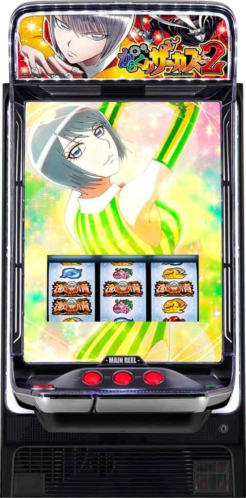
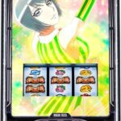
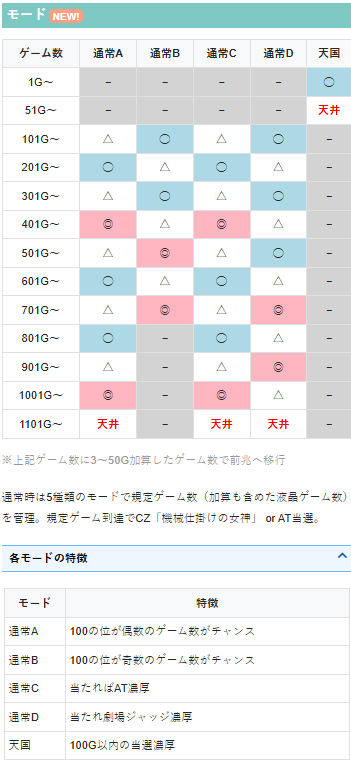
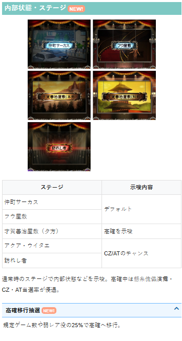
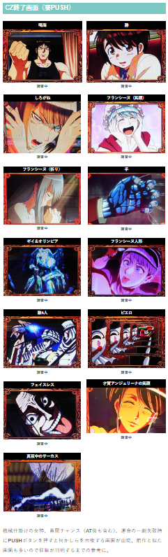
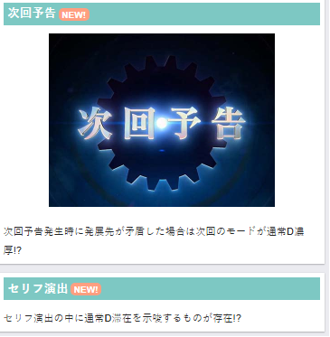

からくりサーカス2 🆕


狙い目
【リセット狙い】
0スルー 100Gから（液晶140G想定）
【CZ間天井狙い】
0～1スルー 500Gから（液晶700G想定）
2スルー 400Gから（液晶560G想定）
3スルー 0Gから
4スルー 0Gから
前回液晶1100G超え（目視出来た場合のみ） 0Gから（液晶200-250Gのゾーン抜けまで）
※前作同様液晶1100G越えは天井短縮ありそう
【AT間天井狙い】
AT間 1500Gから
【ゾーン狙い】
運命の一撃後 0Gから128Gの引き戻しをフォロー
【示唆関連の押し引きについて】
CZ終了画面の1枚絵（PUSH時） 暫定
※前作と同様の示唆なら以下の押し引き。天国が50％以上の状態なら天国確認。
| 今作 | 前作と示唆内容 | 今作 | 押し引き（暫定） |
| 鳴海 | 鳴海 デフォルト | デフォルト？ | 特に無し |
| 勝 | 勝 通常B示唆 | 前作同様？ | 特に無し |
| しろがね | しろがね 通常C示唆 | 前作同様？ | 若干ボーダー下げる？ |
| フランシーヌ（笑顔） | 不明 | 不明 | |
| フランシーヌ（祈り） | モードC以上示唆？ | 攻めるなら1回当選まで？ | |
| 手 | 腕 3回目までに天国有り | 前作同様？ | 天国50％になれば天国確認 |
| ギイ＆オリンピア | 銀色の女神？ 2回目までに天国有り | 天国示唆？ | 天国確認 |
| フランシーヌ人形 | 不明 | 不明 | |
| 敵4人 | 敵3人 5回中2回天国 | 不明 | 不明 |
| ピエロ | ピエロ 通常C or 天国濃厚 | 前作同様？ | 当選まで |
| フェイスレス | フェイスレス 5回中3回天国 | 前作同様？ | 天国確認 |
| 才賀アンジェリーナの笑顔 | 不明 | 不明 | |
| 真夜中のサーカス | 天国報告多め | 天国確認 |
CZ、AT後のステージ狙い
今作は不明だが、前作の鳴海ステージスタートの様なものが存在するかも？
モードD濃厚
モードD濃厚の場合は当選まで
【有利区間関連狙い】
不明
やめ時
特に続行する要素が無ければやめ。
その他
モード

内部状態・ステージ

CZ終了画面のPUSH

モードD示唆

参考元
かめとうさぎのパチスロブログ